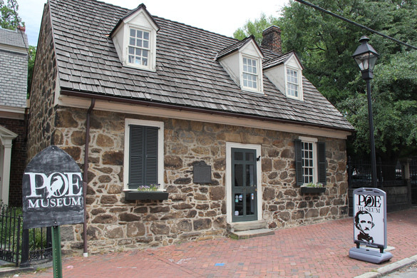

Poe Musuem

Poe Museum is located in Richmond, Virginia. It contains the largest collection of Poe memorabilia. The museum also holds special events, lectures, and more.
This page contains information and links to musuems dedicated to these fantastic poets.
Poe Museum is located in Richmond, Virginia. It contains the largest collection of Poe memorabilia. The museum also holds special events, lectures, and more.
Emily Dickison Museum is located in Amherst, Massachussetts. The museum is in the house that Emily Dickinson grew up in. They hold events and welcome anyone to explore the museum. They also allow you to subscribe to their site for updates and events that go on at the museum.
Shel Silverstein does not have a museum dedicated to him (not yet). But he might be included in the American Writers Museum located in Chicago, Illinois (Silverstein's hometown). At this museum, they celebrate American writers and explore their accomplishmentt and influence out culture. If you check out his museum, let me know and tell me about your experience.